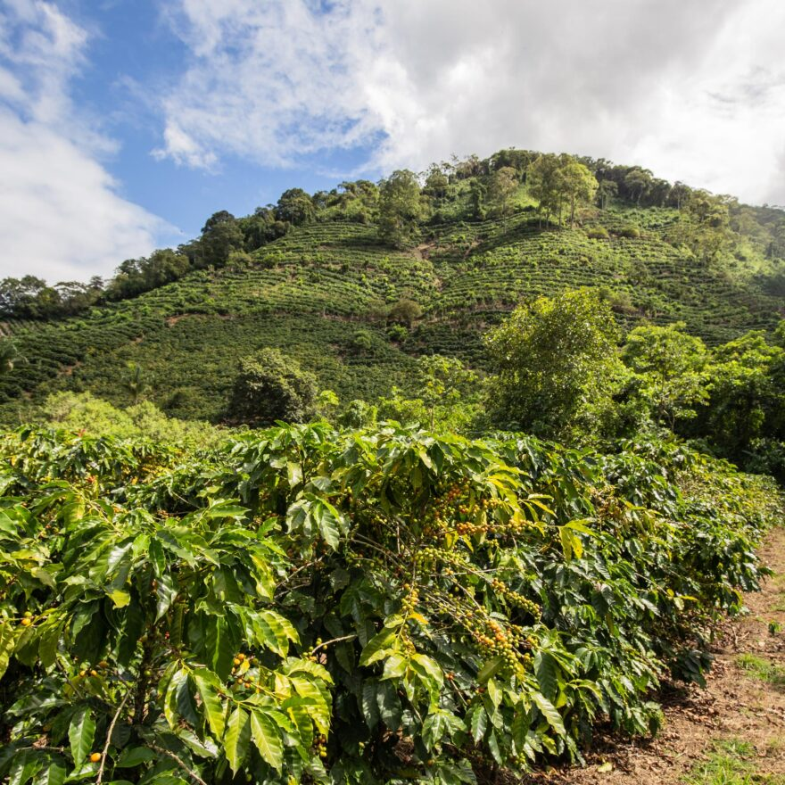

Welcome to Green Hills Coffee Plantation
Green Hills Coffee Plantation is a highland coffee estate set among cool, misty ridges. We grow, harvest and prepare coffee with care, so visitors, tourists and buyers can taste the character of our land in every cup.
About Our Plantation

Coffee Varieties We Grow
- Arabica
- Robusta
- Batian
- Ruiru 11
Coffee Production Process
- Planting
- Growth and development
- Harvesting
- Processing
- Packaging
Key Plantation Activities
- Pruning
- Trimming coffee trees so they stay healthy and produce a stronger crop.
- Harvesting
- Picking only ripe coffee cherries by hand at the right stage of maturity.
- Drying
- Spreading the harvested cherries or parchment in the sun, or using controlled dryers, until the moisture is low enough for storage.